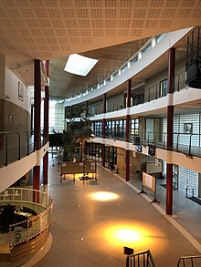
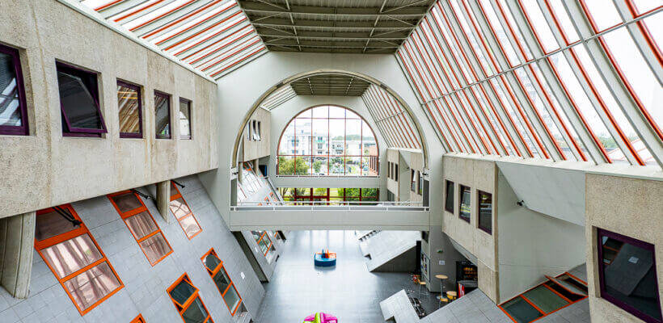

J'ai effectué mon Bac STI2D avec la spécialité Systèmes d'Information et Numérique (SIN) à l'école Léonard de Vinci.
Ce que j'ai appris :
Voir le tableau des compétences acquisesJe suis actuellement en fin de formation en BUT Informatique à l'IUT du Littoral Côte d'Opale.
Ce que j'ai appris :
Voir le tableau des compétences acquises